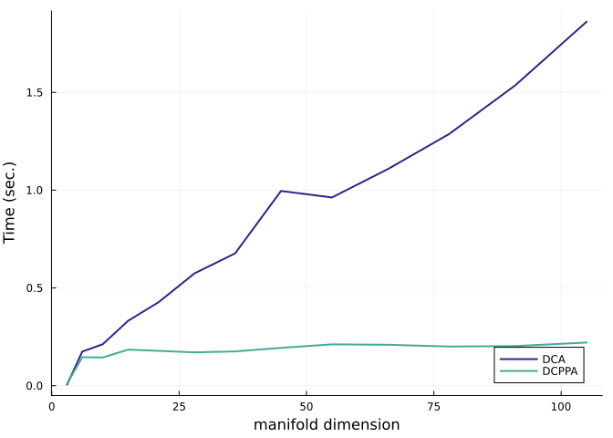

Benchmark of the Difference of Convex Algorithms
Ronny Bergmann 2023-06-06
Introduction
In this Benchmark we compare the Difference of Convex Algprithm (DCA) [BFSS24] and the Difference of Convex Proximal Point Algorithm (DCPPA) [SO15] which solve Difference of Convex (DC) problems of the form. This Benchmark reproduces the results from [BFSS24], Section 7.1.
\[\operatorname*{arg\,min}_{p∈\mathcal M}\ \ g(p) - h(p)\]
where $g,h\colon \mathcal M → \mathbb R$ are geodesically convex function on the Riemannian manifold $\mathcal M$.
using LinearAlgebra, Random, Statistics, BenchmarkTools
using Manifolds, Manopt, ManoptExamples
using NamedColors, Plots
Random.seed!(42)and we load a few nice colors
paul_tol = load_paul_tol()
indigo = paul_tol["mutedindigo"]
teal = paul_tol["mutedteal"]The DC Problem
We start with defining the two convex functions $g,h$ and their gradients as well as the DC problem $f$ and its gradient for the problem
\[ \operatorname*{arg\,min}_{p∈\mathcal M}\ \ \bigl( \log\bigr(\det(p)\bigr)\bigr)^4 - \bigl(\log \det(p) \bigr)^2.\]
where the critical points obtain a functional value of $-\frac{1}{4}$.
where $\mathcal M$ is the manifold of symmetric positive definite (SPD) matrices with the affine invariant metric, which is the default.
We first define the corresponding functions
g(M, p) = log(det(p))^4
h(M, p) = log(det(p))^2
f(M, p) = g(M, p) - h(M, p)and their gradients
grad_g(M, p) = 4 * (log(det(p)))^3 * p
grad_h(M, p) = 2 * log(det(p)) * p
grad_f(M, p) = grad_g(M, p) - grad_h(M, p)which we can use to verify that the gradients of $g$ and $h$ are correct. We use for that
n = 6
M = SymmetricPositiveDefinite(n)
p0 = log(n) * Matrix{Float64}(I, n, n);
X0 = 1 / n * Matrix{Float64}(I, n, n);to tall both checks
check_gradient(M, g, grad_g, p0, X0; plot=true)and
check_gradient(M, h, grad_h, p0, X0; plot=true)which both pass the test. We continue to define their in-place variants
function grad_g!(M, X, p)
copyto!(M, X, p)
X .*= 4 * (log(det(p)))^3
return X
end
function grad_h!(M, X, p)
copyto!(M, X, p)
X .*= 2 * (log(det(p)))
return X
end
function grad_f!(M, X, p)
grad_g!(M, X, p)
Y = copy(M, p, X)
grad_h!(M, Y, p)
X .-= Y
return X
endAnd compare times for both algorithms, with a bit of debug output.
@time p_min_dca = difference_of_convex_algorithm(
M,
f,
g,
grad_h!,
p0;
grad_g=grad_g!,
gradient=grad_f!,
evaluation=InplaceEvaluation(),
debug=[
:Iteration,
(:Cost, "f(p): %1.9f"),
(:GradientNorm, " |grad_f(p)|: %1.9f"),
(:Change, " |δp|: %1.9f"),
:Stop,
5,
"\n",
],
stopping_criterion=StopAfterIteration(5000) | StopWhenGradientNormLess(1e-10),
sub_stopping_criterion=StopAfterIteration(100) | StopWhenGradientNormLess(1e-10),
);Initial f(p): 137.679053470
# 5 f(p): -0.249956120 |grad_f(p)|: 0.046196628 |δp|: 0.201349127
# 10 f(p): -0.249999999 |grad_f(p)|: 0.000187633 |δp|: 0.000626103
# 15 f(p): -0.250000000 |grad_f(p)|: 0.000000772 |δp|: 0.000002574
# 20 f(p): -0.250000000 |grad_f(p)|: 0.000000005 |δp|: 0.000000011
The algorithm reached approximately critical point after 24 iterations; the gradient norm (7.619584706652928e-11) is less than 1.0e-10.
3.711502 seconds (22.45 M allocations: 1.173 GiB, 7.83% gc time, 99.46% compilation time)The cost is
f(M, p_min_dca)-0.25000000000000006Similarly the DCPPA performs
@time p_min_dcppa = difference_of_convex_proximal_point(
M,
grad_h!,
p0;
g=g,
grad_g=grad_g!,
λ=i -> 1 / (2 * n),
cost=f,
gradient=grad_f!,
debug=[
:Iteration,
(:Cost, "f(p): %1.9f"),
" ",
(:GradientNorm, "|grad_f(p)|: %1.10f"),
(:Change, "|δp|: %1.10f"),
:Stop,
5,
"\n",
],
evaluation=InplaceEvaluation(),
stepsize=ConstantLength(1.0),
stopping_criterion=StopAfterIteration(5000) | StopWhenGradientNormLess(1e-10),
sub_stopping_criterion=StopAfterIteration(100) | StopWhenGradientNormLess(1e-10),
);Initial f(p): 137.679053470
# 5 f(p): -0.248491803 |grad_f(p)|: 0.2793140152|δp|: 0.2753827692
# 10 f(p): -0.249998655 |grad_f(p)|: 0.0080437374|δp|: 0.0050891316
# 15 f(p): -0.249999999 |grad_f(p)|: 0.0002507329|δp|: 0.0001567676
# 20 f(p): -0.250000000 |grad_f(p)|: 0.0000078348|δp|: 0.0000048968
# 25 f(p): -0.250000000 |grad_f(p)|: 0.0000002448|δp|: 0.0000001530
# 30 f(p): -0.250000000 |grad_f(p)|: 0.0000000076|δp|: 0.0000000048
# 35 f(p): -0.250000000 |grad_f(p)|: 0.0000000002|δp|: 0.0000000001
The algorithm reached approximately critical point after 37 iterations; the gradient norm (5.458071707233144e-11) is less than 1.0e-10.
1.005187 seconds (5.32 M allocations: 306.021 MiB, 2.72% gc time, 98.51% compilation time)It needs a few more iterations, but the single iterations are slightly faster. Both obtain the same cost
f(M, p_min_dcppa)-0.25Benchmark I: Time comparison
We compare both solvers first with respect to time. We initialise two vectors to collect the results and a range of natrix sizes to test
dca_benchmarks = Dict{Int,BenchmarkTools.Trial}()
dcppa_benchmarks = Dict{Int, BenchmarkTools.Trial}()
N_max=14
N = 2:N_maxand run a benchmark for both algorithms
for n in N
Mn = SymmetricPositiveDefinite(n)
pn = log(n) * Matrix{Float64}(I, n, n)
bdca = @benchmark difference_of_convex_algorithm(
$Mn,
$f,
$g,
$grad_h!,
$pn;
grad_g=$grad_g!,
gradient=$grad_f!,
evaluation=InplaceEvaluation(),
stopping_criterion=StopAfterIteration(5000) | StopWhenGradientNormLess(1e-10),
sub_stopping_criterion=StopAfterIteration(100) | StopWhenGradientNormLess(1e-10),
)
dca_benchmarks[n] = bdca
bdcppa = @benchmark difference_of_convex_proximal_point(
$Mn,
$grad_h!,
$pn;
g=$g,
grad_g=$grad_g!,
λ=i -> 1 / (2 * n),
cost=f,
gradient=grad_f!,
evaluation=InplaceEvaluation(),
stepsize=ConstantLength(1.0),
stopping_criterion=StopAfterIteration(5000) | StopWhenGradientNormLess(1e-10),
sub_stopping_criterion=StopAfterIteration(100) | StopWhenGradientNormLess(1e-10),
)
dcppa_benchmarks[n] = bdcppa
endSince we want to plot this versus the manifold dimension, we also create a vector for those and convert the times to seconds
dims = [manifold_dimension(SymmetricPositiveDefinite(n)) for n in N]
dca_times = [mean(dca_benchmarks[n]).time / 1e9 for n in N]
dcppa_times = [mean(dcppa_benchmarks[n]).time / 1e9 for n in N]plot(; legend=:bottomright, xlabel="manifold dimension", ylabel="Time (sec.)")
plot!(dims, dca_times; label="DCA", color=indigo, linewidth=2)
plot!(dims, dcppa_times; label="DCPPA", color=teal, linewidth=2)
Benchmark II: Iterations and cost.
As a second benchmark, let’s collect the number of iterations needed and the development of the cost over dimensions.
N2 = [5,10,20,40,80]
dims2 = [manifold_dimension(SymmetricPositiveDefinite(n)) for n in N2]
dca_iterations = Dict{Int,Int}()
dca_costs = Dict{Int,Vector{Float64}}()
dcppa_iterations = Dict{Int,Int}()
dcppa_costs = Dict{Int,Vector{Float64}}()@time for n in N2
println(n)
Mn = SymmetricPositiveDefinite(n)
pn = log(n) * Matrix{Float64}(I,n,n);
@time dca_st = difference_of_convex_algorithm(
Mn, f, g, grad_h!, pn;
grad_g=grad_g!,
gradient=grad_f!,
evaluation = InplaceEvaluation(),
stopping_criterion = StopAfterIteration(5000) | StopWhenGradientNormLess(1e-10),
sub_stopping_criterion = StopAfterIteration(100) | StopWhenGradientNormLess(1e-10),
record = [:Iteration, :Cost],
return_state = true,
);
dca_costs[n] = get_record(dca_st, :Iteration, :Cost)
dca_iterations[n] = length(dca_costs[n])
@time dcppa_st = difference_of_convex_proximal_point(
Mn, grad_h!, pn;
g=g,
grad_g=grad_g!,
λ = i -> 1/(2*n),
cost = f,
gradient= grad_f!,
evaluation = InplaceEvaluation(),
stepsize = ConstantLength(1.0),
stopping_criterion = StopAfterIteration(5000) | StopWhenGradientNormLess(1e-10),
sub_stopping_criterion = StopAfterIteration(100) | StopWhenGradientNormLess(1e-10),
record = [:Iteration, :Cost],
return_state = true,
);
dcppa_costs[n] = get_record(dcppa_st, :Iteration, :Cost)
dcppa_iterations[n] = length(dcppa_costs[n])
endThe iterations are like
plot(; legend=:bottomright, xlabel="manifold dimension", ylabel="Iterations")
plot!(dims2, [values(dca_iterations)...]; label="DCA", color=indigo, linewidth=2)
plot!(dims2, [values(dcppa_iterations)...]; label="DCPPA", color=teal, linewidth=2)And for the developtment of the cost
where we can see that the DCA needs less iterations than the DCPPA.
Technical details
This tutorial is cached. It was last run on the following package versions.
Status `~/Repositories/Julia/ManoptExamples.jl/examples/Project.toml`
[6e4b80f9] BenchmarkTools v1.6.0
[336ed68f] CSV v0.10.15
[13f3f980] CairoMakie v0.15.6
[0ca39b1e] Chairmarks v1.3.1
[35d6a980] ColorSchemes v3.31.0
⌅ [5ae59095] Colors v0.12.11
[a93c6f00] DataFrames v1.8.0
[31c24e10] Distributions v0.25.122
[7073ff75] IJulia v1.30.6
⌅ [682c06a0] JSON v0.21.4
[8ac3fa9e] LRUCache v1.6.2
[b964fa9f] LaTeXStrings v1.4.0
[d3d80556] LineSearches v7.4.0
[ee78f7c6] Makie v0.24.6
[af67fdf4] ManifoldDiff v0.4.5
[1cead3c2] Manifolds v0.11.0
[3362f125] ManifoldsBase v2.0.0
[0fc0a36d] Manopt v0.5.25
[5b8d5e80] ManoptExamples v0.1.16 `..`
[51fcb6bd] NamedColors v0.2.3
[91a5bcdd] Plots v1.41.1
⌅ [08abe8d2] PrettyTables v2.4.0
[6099a3de] PythonCall v0.9.28
[f468eda6] QuadraticModels v0.9.14
[1e40b3f8] RipQP v0.7.0
Info Packages marked with ⌅ have new versions available but compatibility constraints restrict them from upgrading. To see why use `status --outdated`This tutorial was last rendered October 11, 2025, 17:12:28.
Literature
- [BFSS24]
- R. Bergmann, O. P. Ferreira, E. M. Santos and J. C. Souza. The difference of convex algorithm on Hadamard manifolds. Journal of Optimization Theory and Applications (2024).
- [SO15]
- J. C. Souza and P. R. Oliveira. A proximal point algorithm for DC fuctions on Hadamard manifolds. Journal of Global Optimization 63, 797–810 (2015).